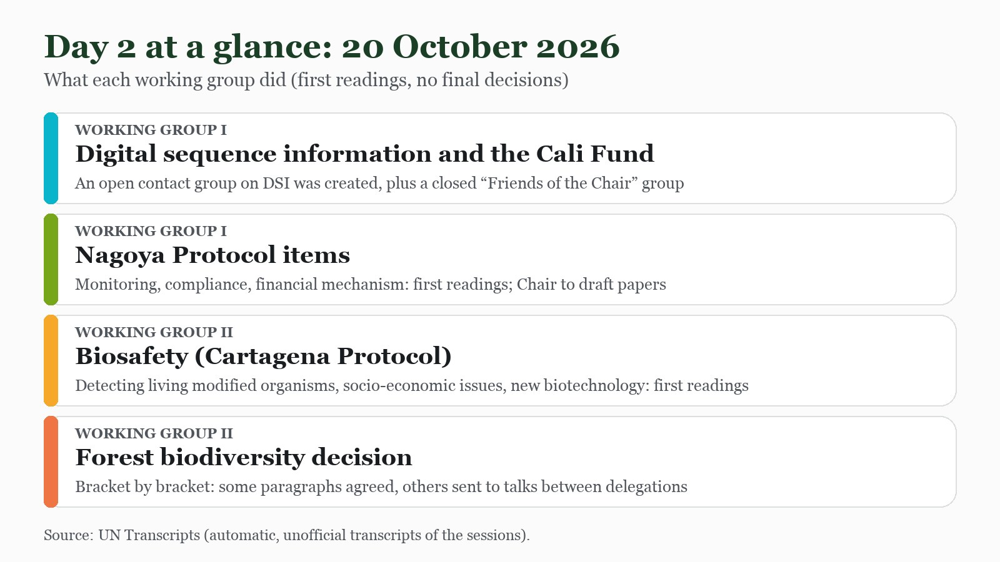

The plenary speeches are over and the real work has begun. On Tuesday 20 October the two working groups started their first readings, and the day showed where the hardest negotiating is: whether companies that use genetic data from nature must pay, and how every word of a forest decision survives scrutiny.
How the work is organised
COP17 divides most of its agenda between Working Group I and Working Group II. Each item gets a first reading: delegations state their positions, the Chair notes where they agree and disagree, and then the Chair and the Secretariat write a draft, called a conference room paper, for the next round. Nothing was finally decided on Tuesday. Chairs repeatedly asked delegations to send written text amendments instead of general statements, because time with interpreters was running short. Everything below draws on the UN’s automatic transcripts of the sessions, which are unofficial and sometimes garbled, so names and numbers should be read with care.

Working Group I: genetic data and the Cali Fund
Digital sequence information, or DSI, is the genetic data from nature held in public databases. COP16 agreed that companies which profit from it should share some of the benefits through the Cali Fund. The question now is how binding that should be. The transcript records these positions:
- South Africa, speaking with the African Group and the megadiverse countries: a fund that depends on goodwill will not deliver, and at least half of the money should reach Indigenous peoples and local communities. Senegal made the same two points.
- Ecuador, Ethiopia and Guatemala: voluntary contributions are not enough and should not be treated as charity. Ecuador asked for binding contributions from the main users.
- China: criteria should reflect national conditions, indicative rates are not mandatory thresholds, and extra modalities can wait until COP18.
- India: differentiated contributions by company size, but the allocation formula needs more technical work first.
- Cameroon: keep the indicative rate and do not widen the legal effect beyond the COP16 decision.
- Indonesia: criteria on company size and DSI dependency are not harmonised, so several paragraphs should be bracketed.
- Observers: the Indigenous peoples’ forum wants at least 50% for communities and direct access; the NGO CBD Alliance rejected what it called an attempt to financialise benefit sharing; a business observer said voluntary payments should reflect actual use.
The outcome was procedural but important. An open contact group on DSI, co-chaired by Zimbabwe and Austria, will work through nine topics including thresholds, rates, governance and certificates, starting from a non-paper by the Chair. A separate closed “Friends of the Chair” group for Parties will handle questions on the UN bodies involved. The Chair’s guidance was clear: do not reopen clean text, resolve brackets, and keep decisions short.
Working Group I: the Nagoya Protocol and the money behind it
The same group read several Nagoya Protocol items for the first time. On the financial mechanism, the Global Environment Facility reported funding for 15 countries under its current cycle and initial pledges of about $3.9 billion for the next one, according to the transcript. Saudi Arabia pointed to Article 20 on financial responsibilities, while Egypt noted that most biodiversity funding comes from public sources. India, Argentina and Burundi asked for predictable, accessible finance with simpler procedures. On monitoring and reporting, South Africa and Bangladesh stressed timely funding for the next national reports. On compliance, the Chair heard “a lot of common understanding” and will draft a text.
Working Group II: biosafety and the forest decision
Working Group II took the Cartagena Protocol items on biosafety and then a decision on the strategic review of the programme of work on forest biodiversity. On biosafety, there was broad support for a new chapter on digital PCR testing for living modified organisms, with several countries saying it must stay optional. Saudi Arabia argued that genetically engineered organisms fall within the Protocol and should be discussed there; Indonesia, Paraguay, Panama and Thailand described their own case-by-case national rules.
The forest decision shows how slow and exact this work is. The Chair aimed to clear brackets paragraph by paragraph so that the text can be adopted in plenary on Friday evening, according to the transcript. Several paragraphs were cleaned up after rounds of wording, including one on consumers, and others stayed in brackets:
- Paragraph 1: whether to “protect and conserve” forests. Namibia wants to keep “protect”, while Russia, Brazil and Switzerland backed the Chair’s compromise and the EU wanted language on primary forests.
- Paragraph 20: the EU proposed restructuring the text on biodiversity-friendly practices; Brazil called that a red line, and the two were asked to confer.
- Paragraph 38: Russia proposed deleting several sub-paragraphs, including access to information and justice, and said it had red lines. Canada noted that this wording comes from Target 22 of the framework. Russia and Brazil agreed to talk informally.
Through a child and youth lens
The paragraph under strain on Tuesday matters to young people. Target 22 of the framework calls for the full participation of Indigenous peoples and local communities, women and girls, children and youth and persons with disabilities in decisions on biodiversity, and for their access to justice and information. When Parties propose deleting “access to information and justice” from a forest decision, they are deciding whether those promises are repeated in practice.
What the working group transcripts I could read do not show is any intervention focused on children. Young people and children appear only through the framework language that Canada reminded the room of. As a member of the UNICEF Global Delegation, my job in the coming days is to follow exactly these paragraphs and ask for children and youth to be named, not only implied.
What to watch tomorrow
- The DSI contact group’s first meeting and the Chair’s non-paper, especially on whether contributions will be voluntary or binding.
- The forest decision: paragraphs 1, 5, 20, 23 and 38, and whether Russia and Brazil, and the EU and Brazil, find wording.
- The draft papers from the Chairs on the Nagoya and Cartagena items.
- Evening working group sessions, where the Chairs have said they will keep pressing for written proposals.
Follow where I am each day on my COP17 schedule, and the daily news in the Newsroom.
Sources
- UN Transcripts (20 Oct 2026), Working Group I (2nd meeting), UN Convention on Biodiversity - COP 17. Automatic, unofficial transcript. https://transcripts.un.org/en/asset/k1l/k1lbnngn3q
- UN Transcripts (20 Oct 2026), Working Group II (2nd meeting), UN Convention on Biodiversity - COP 17. Automatic, unofficial transcript. https://transcripts.un.org/en/asset/k12/k12nqujdiw
- UN Transcripts (20 Oct 2026), Working Group II (3rd meeting), UN Convention on Biodiversity - COP 17. Automatic, unofficial transcript. https://transcripts.un.org/en/asset/k1x/k1xmmwkf38
- Convention on Biological Diversity, Kunming-Montreal Global Biodiversity Framework, Target 22. https://www.cbd.int/gbf/targets/22